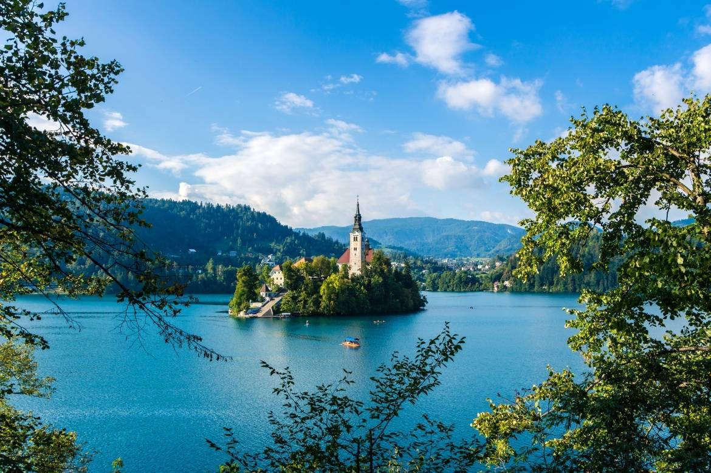
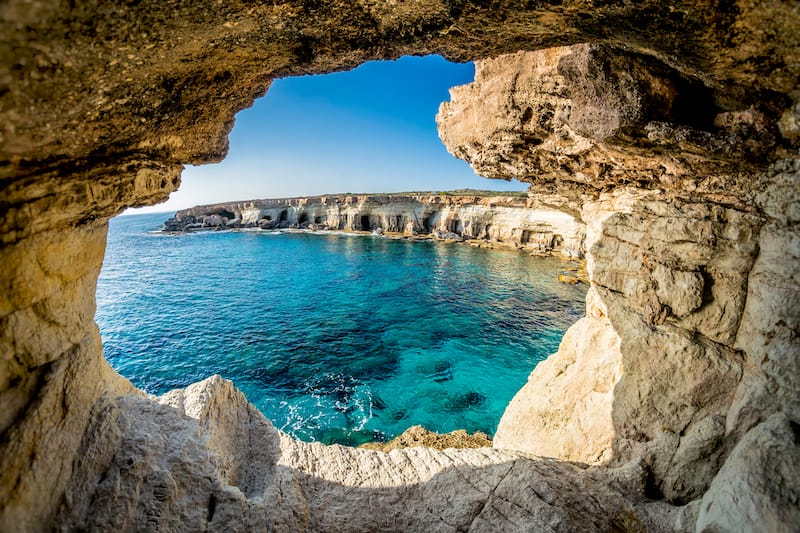
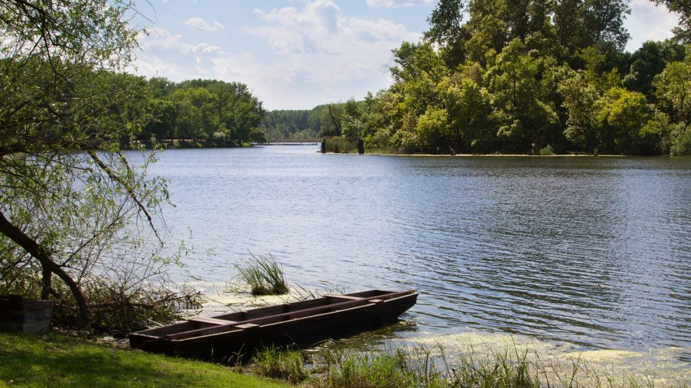

A nyaram nagyon intenzív volt. Tele volt utazással, programokkal és munkával.
| Hely | Kép | Beszámoló | Link |
|---|---|---|---|
| Szlovénia |  | A Bledi-tó közelében, túrával és elképesztő látvánnyal teli nyaralás volt. | Szlovénia |
| Ciprus |  | Igaz, irgalmatlan meleg volt, de megérte. Repülővel 2-3 óra hossza utazás után megérkeztem a gyönyörű Ayia Napa tengerpartjára. | Ciprus |
| Tisza |  | Egy hosszúhétvégén voltam egy nyaralóban a Tisza egyik holtágánál. Egész nap horgászás, zene, mulatás stb. Kellett egy kis kiszakadás a mindennapokból. | Tisza |